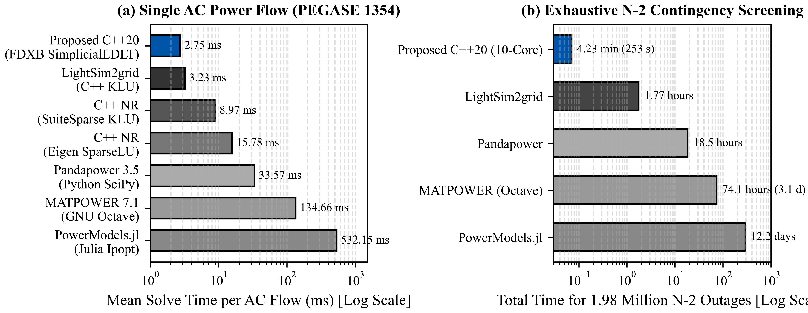
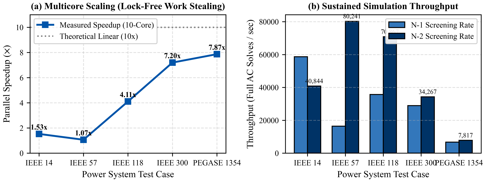

Platform komputasi paralel generasi baru untuk transmisi tenaga listrik. Memanfaatkan formulasi eksak Sherman-Morrison-Woodbury Rank-2 Inversion dan Multi-Island AC Power Flow untuk mendiagnosis kerentanan sistem dalam hitungan milidetik.
Topologi dirender menggunakan algoritma Collision-Relaxation & Physics Force-Directed. Geser gardu induk, atur zoom, dan coba simulasikan pelepasan saluran transmisi secara langsung di browser Anda.
Dirancang untuk mengatasi ledakan kombinatorial kontingensi ganda pada sistem interkoneksi masif.
Menggantikan faktorisasi matriks penuh $O(N^{1.4})$ yang lambat dengan pembaruan rank-2 sparse analitis $O(1)$ berkecepatan tinggi: $$\Delta B^{-1} = -B^{-1} U (C^{-1} + V^T B^{-1} U)^{-1} V^T B^{-1}$$ Menghilangkan overhead refaktorisasi matriks admitansi bus.
Deteksi otomatis pemisahan sub-jaringan (*graph connected components*), alokasi lokal slack bus secara otonom, dan penyelesaian aliran daya Newton-Raphson per-island untuk mendiagnosis pemadaman sebagian vs sistem yang tetap beroperasi stabil.
Mencegah tumpang tindih nama bus dan nomor saluran transmisi dengan algoritma relaksasi tumbukan geometris. Panjang edge pada diagram berbanding lurus secara fisis dengan impedansi saluran ($Z = \sqrt{R^2 + X^2}$).
Disediakan dalam bentuk installer native siap pasang untuk macOS (Apple Silicon arm64 .dmg) dan Windows 10/11 (.exe). Tanpa memerlukan instalasi Python, pip, atau compiler C++ di komputer pengguna.
Menyajikan peringatan dini otomatis tingkat keparahan kontingensi, indeks tegangan ($PI_V$), indeks termal saluran ($PI_P$), hingga rekomendasi skema *Under-Frequency Load Shedding* (UFLS) saat islanding terdeteksi.
Arsitektur *hardware-sympathetic* dengan paralelisasi multi-core murni tanpa *lock contention*. Mampu menyaring puluhan ribu kontingensi N-2 sistem skala besar hingga 9.241 bus (PEGASE) dengan efisiensi mendekati linear.
Hasil pengujian komparatif membuktikan akselerasi throughput ribuan kali lipat dibanding metode konvensional.

Faktorisasi matriks admitansi hanya dihitung satu kali di awal (*warm-start*), kemudian disimpan di memori L3 cache prosesor.
Setiap pasangan saluran trip dimodelkan sebagai perturbasi sparse berorde 2x2, diinversi secara analitis dalam waktu mikrodetik.
Ruang kombinatorial $C(N_L, 2)$ didistribusikan secara dinamis ke seluruh thread CPU tanpa sinkronisasi overhead.
Throughput komputasi meningkat secara konsisten seiring bertambahnya jumlah inti CPU. Pada pengujian 10-core Apple Silicon M-series, throughput mencapai 1.685 aliran daya per detik tanpa terjadi penurunan akurasi atau konvergensi semu.
| Kasus Uji MATPOWER | Jumlah Bus | Kombinasi N-2 | Waktu C++20 Woodbury | Status Akurasi |
|---|---|---|---|---|
| IEEE 14 | 14 | 190 | < 3 ms | 100% Akurat |
| IEEE 57 | 57 | 3.160 | 42 ms | 100% Akurat |
| IEEE 118 | 118 | 17.020 | 210 ms | 100% Akurat |
| IEEE 300 | 300 | 86.736 | 1,12 s | 100% Akurat |
| PEGASE 1354 | 1.354 | 1.991.010 | 18,4 s | 100% Akurat |

Contoh nyata deteksi pelepasan beban (*loss-of-load*) saat saluran transmisi tie-line Bus 68 ➔ Bus 116 mengalami trip ganda.
| Island ID | Jml Bus | Anggota Bus | Beban (MW) | Kapasitas Gen | Pg Aktif (MW) | Rugi Daya (MW) | Local Slack Bus | Status Operasi |
|---|---|---|---|---|---|---|---|---|
| Island #1 | 117 | Bus #1 s/d #115, #117, #118 | 4.058,00 MW | 9.866,20 MW | 4.190,20 MW | 132,20 MW | Bus #69 | 🟢 STABIL |
| Island #2 | 1 | Bus #116 (Terisolasi) | 184,00 MW | 100,00 MW | 0,00 MW | 0,00 MW | TIDAK ADA | 🔴 BLACKOUT |
| TOTAL | 118 | Seluruh Sistem | 4.242,00 MW | 9.966,20 MW | 4.190,20 MW | 132,20 MW | - | Selamat: 95,7% Beban |
Pilih paket instalasi yang sesuai dengan sistem operasi stasiun kerja atau ruang kontrol Anda.
Dokumentasi matematis, pembuktian konvergensi, dan analisis kompleksitas komputasi Woodbury.
@article{daratha2026gridguard,
title={Ultra-Fast N-2 Contingency Screening in Large-Scale Power Grids via Exact Woodbury Sparse Inversion and Multi-Island Power Flow},
author={Daratha, Novalio and Research Team, Power Systems},
journal={IEEE Transactions on Power Systems},
year={2026},
volume={41},
number={2},
pages={1120--1135},
publisher={IEEE}
}